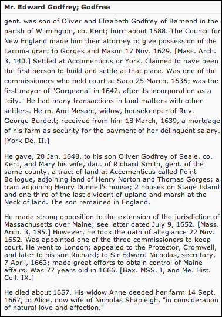

French Family Association
The Official Website of the Surname French
Seymours Town Tercentenary
Celebrating Connecticuts 300th Anniversary,
1635-1935
Chart #8, Francis French, 1625
Derby, CT
Introduction
This chart updated by Mara French on 5/2/12. Numbers in brackets [ ] show sources and refer to the bibliography at the end of this chart. An asterisk (*) shows continuation of that line. Send any corrections or additions to this chart to marafrench@mindspring.com. Revisions: 2012.
|
Intro |
Gen 1 |
Gen 2 |
Gen 3 |
Gen 4 |
Gen 5 |
| Gen 6 |
Gen 7 |
Gen 8 |
Gen 9 |
Gen 10 |
| Gen 11 |
Gen 12 |
Records |
Bibliography |
Contents
Who Was
The Father of Francis French?
Who Was The Mother of Francis French?
Edward Wooster and Francis French
John Jay French Museum, Beaumont, TX
Cities and Towns
Derby, Seymour, and Milford, CT
Derby, including what is now Seymour, was taken from Milford, one of the six towns of the New Haven colony. It was incorporated by the authority of New Haven in 1675 and named after Derby, England, with 12 families, Francis Frenchs family being one of them. The bounds between Derby and Milford were not laid out until 1680 [34]. Therefore, many early French records list Francis French as living in Derby, while others say Seymour. As you read about your ancestors, note for example that your line may have come from Derby, then the next generation from Seymour. You may have thought that the family moved, when in reality, many of the larger towns (such as Derby) were subdivided into small towns (such as Seymour).
The first settlers to Seymour came to use the Falls in the Valley of the Nangatuck. This area attracted the hunter, trapper, and fisherman. As early as 1633, a tribe of Pequot Indians lived at the Falls. Paugassett or Pawgasuck, now Derby, divided land among its inhabitants in 1671 [34].
Ansonia was incorporated from Derby in 1889 [38].
Beacon Falls was incorporated from Bethany, Oxford, Naugatuck, and Seymour in 1871 [38].
Bethany was incorporated from Woodbridge in 1832 [38].
Derby (Paugassett or Pawgasuck) granted plantation on 13 May 1675 and named it Derby, from Derby, England, the home of some of the settlers [38].
Humphreysville (Naukotunk), about four and a half miles north of Derby Landing, derived its name from David Humphreys, and is now Seymour [38].
Milford was an independent settlement until the fall of 1643 [38].
Naugatuck was incorporated from Bethany, Oxford, and Waterbury in 1844 [38].
Seymour was incorporated from Derby and named after Governor Thomas H. Seymour in 1850 [38].
Woodbridge was incorporated from New Haven and Milford in 1784 and named from the Reverend Benjamin Woodbridge, first pastor of the first church in the town [38].
Who Was The Father of Francis French?
The Elizabeth who immigrated to Massachusetts in 1635 on the ship Defence, m. William French in England (whereabouts unknown), and d. 31 Mar 1668 in Billerica, MA. The supposed son of Elizabeth, Francis (spelled with an i), was b. in 1625, removed to Milford, CT about 1650, and four years later was the second settler in Derby, CT. Francis was not mentioned in William Frenchs will. It has been noted in several books that Francis was not the son of William, but with no legal documentation to verify it.
Determining his Father through DNA
As I do research, it becomes more and more confusing while at the same time more and more clear. Francis Frenchs line is Chart #8, William French is Chart #2, Richard French (my line) is Chart #6, and Edward French is Chart #4. They all have had some dealings with each other either with land deeds or taking care of the others' children. However, Charts #4 and #6 have the same DNA, whereas Chart #2 matches the DNA of Charts #1 and #3. We do not yet know about the DNA for Chart #8.
Most of the French family on all these charts came from County Essex in England, BUT, I'm finding a connection further back to Warwickshire where Chart #4 was born, and perhaps the where mother of Francis was born. That is where the Wooster family lived, and Edward French of Chart #4 married Ann Wooster and Francis French of Chart #8 moved to Connecticut with Edward Wooster and his wife Elizabeth (French?). Francis died after his supposed father William, but is not mentioned in William's will, whereas William specifically states that he is including all his children. I had thought that Francis was from William's supposed 1st wife. Only DNA will lead us into the right direction. Francis could also be the illegitimate son of a French sister, and therefore the DNA would not match at all.
Was Francis Scargill his Father?
Could Elizabeth Godfrey have m1. Francis Scargill and had son Francis just before he died, and then m2. William French?
In early times, the ruler of England sent a representative
to outlying districts to visit manor houses and count the people so his
officers could estimate the taxes.
Through these records, we may have identified
Elizabeth Godfreys whereabouts. We found an Elizabeth Godfrey living only 36
miles west of Halstead, Essex County (where William French lived with whom
Francis immigrated to America), in Croydon, Cambridgeshire,
England. She had a son named Francis, and her husband, Francis Scargill, died when his son was only 6 months old. That
would leave Elizabeth a widow with a 6-month old child named Francis – a
perfect candidate for the wife of William of Billerica, MA. (from
the Visitation of Cambridge, 1619.)
If Francis were actually Francis Scargill, born 1618 in Knockwell
(Knapwell), Cambridge, England, he would have been 16
when he emigrated (immigration records say he was 10), 31 when he removed to
CT, 42 when he married, and 62 when he died.
After a partial search, this line seemed to be a
winner, so I stopped my research –– a very dangerous thing to do. Then
I asked my researcher, Delpha Triptow,
in Salt Lake City, to research this line further in England. Delpha found that little Frances stayed in Cambridge,
England, all his life, got his BA in 1639, MA in 1643, was ordained a Deacon in
1643, was a Vicar of Knapwell in 1650, and d. 1653.
So, this Frances is not the same one as the Francis who immigrated with William
and Elizabeth French on the ship Defence in 1635.
I received email from Roger Wood, roger.wood99@lineone.net
who states the following:
Dear Mara, Nov 12, 2009
Could you please inform if I can purchase one of your
past articles. I am researching into a rector of my parish West Hallam, Derbyshire. U.K. John Scargill,
rector 1638-1662. In 2012 we are organising events to
celebrate his life. He originated in a village called Knapwell
in Cambridge. The connection is his sister-in-law Elizabeth Godfrey who married
Frances Scargill. Frances died young and Elizabeth
re-married and emigrated to the U.S.A. I have completed a Google search and a
brief mention is made to "The Frenchline vol 1-6 (1984) page 290". I have contacted many
libraries.
Dear Mara, Nov 15, 2009
I cannot find any information about the Scargills
Elizabeth Godfrey emigrating to America. My only reference to an
Elizabeth Godfrey marrying William French is taken from: "Immigrant
Ancestors A list of 2,500 Immigrants to America before 1750". Extracted
from Volume VII. A Compendium of American Genealogy Edited by
Frederick Adams Virkus. This has just been
republished in the States by GPC. Page 32 lists William French married
Elizabeth Godfrey (1605-68) in England.
Dear Mara, Nov 14, 2009
Thanks for your recent e-mail. Our Francis Scargill III died in 1646 his will proved March 4 1651-2 by
relict Elizabeth. I have attached the Scargill family
tree for your information with further details of Frances III. Elizabeth Godfrey
that married Frances Scargill III was baptised 12 September 1599 Croydon, Cambridge.
Francis Scargill (II) (15??
- 1605)
Eldest son of Henry Scargill, Educated at St Catherines College Cambridge August 1564. Gaining B.A.
Afterwards becoming vicar/rector of Shepworth, Knapwell and Lolworth parishes Cambridgeshire between (1556-1605).
Married Katherine Turner of Warwickshire. Children Francis Scargill, Thomas Scargill, Dorothy Scargill, John Scargill (later rector of West Hallam).
Buried Knapwell July 17 1605.
Francis Scargill (III) (15??
- 1646)
Eldest son of Francis Scargill II and Katherine Turner of Warwickshire.
Educated at Sidney College Cambridge. Admittede as a pensioner 29 March 1604.
Married August 1 1617 St Michaels Church Cambridge to Elizabeth Godfrey daughter of Richard and Mary Godfrey of Croydon Cambridge.
Children:
Frances Scargill bapt January 14 1618 Died 1655
John Scargill bapt February 14 1620 Died April 27 1683
Richard Scargill bapt July 13 1622
Henry Scargill bapt February 24 1623 Buried March 16 1667
Elizabeth Scargill bapt April 10 1627
Mary Scargill bapt January 26 1629
Francis Scargill III died 1646. Will proved March 4 1651-2 by relict Elizabeth.
Francis Scargill (IV) (1618
- 1655)
Eldest son of Francis Scargill III and Elizabeth Godfrey. Educated at Trinity College, Cambridge. Admitted as a pensioner 5 April 1636.
B.A. Gained 1639-40.
M.A. Gained 1643.
Ordained Deacon (Lincoln) 31 October 1643
Priest 18 April 1644
Curate of Knapwell Cambridge (1643).
Vicar of Knapwell Cambridge 1650
Who Was The Mother of Francis French?
Two women named Elizabeth on the ship Defence in 1635 could have been Elizabeth Godfrey and Elizabeth Symmes.
There is another situation that needs to be researched. On
the ship "Defence" in 1635 there were 2
women named Elizabeth French, one was 30 and the other was 32. They boarded at
different times, were of the same party. It was thought that Elizabeth boarded
first with her husband and was counted on the ship records, then left to return
with the children and was recounted. I'm not sure if that is correct. There
could have been 2 different Elizabeths, Elizabeth
Godfrey and Elizabeth Symmes, both of whom
show documentation as being the wife of William. Also on that immigration list
is a Sara Simms who may have been a sister. Was one of the women named
Elizabeth French a sister to William?
On 5 Apr 1625 Elizabeth French, widow from The Leete, was
buried in Halstead (no William mentioned), and her husband was also not named,
but William was the only French from The Leete. She could have died in childbirth with Francis,
and she could have been the first wife of William French who immigrated to
Massachusetts on the Defence in 1635, or a child of
William Frenchs father.
The William French from The
Leete was the father of William the emigrant; b.
1580; whereas, son William was b. 1605 and his father married later in life and
could have had another child as follows:
The William from The Leete
was definitely the one whose wife, Anne, died as the widow in 1623, the wife of
William French from The Leete, and before that she was married to her first
husband who was a man named Stevens. The exact reading of this burial
notice is somewhat confusing in itself: Anne French widow the wife of William
French from The Leete was buried the 7th of July (1623), but my
researcher in Essex, Peter Nutt, along with the Archivist at the Essex Record
Office state that the sentence should read:
Anne buried widow formerly the wife of William French from The Leete.
However, the FFA disagrees in part with this research. We
believe it could read:
Anne buried widow of Stevens, the wife of William French from The Leete.
Usually if a woman dies and she is a widow, her husbands
name is not mentioned if he had also died, but in this case, Stevens died but
not French. Besides that, when a widow dies, I have rarely
or never seen her deceased husbands name mentioned.
Here's an example of a woman marrying a man, she was a widow, and it names her husband who died.
Another woman named Elizabeth French was from The Leete, a widow, died on 5 Apr 1625 as Elizabeth French,
widow from The Leete, and was perhaps married
to William French of The Leete (because she was a widow), but she herself was
not of French blood. She could have been the last wife of William of The Leete, and
she died in childbirth from delivering son Francis, born 5 Apr 1625. Francis
could have accompanied his older brother William French (the emigrant) on the
ship Defence
to New England in 1635. Francis voyage at age 10 with William French
definitely shows a very close family connection as brothers. Francis was not
the emigrants son because in William the emigrants will, he specifically
states that he gives to all his children, but the name Francis does not appear.
William remained in Massachusetts and Francis moved to Connecticut. This is all
conjecture on my part. There is no other male French who could have married
Elizabeth other than William. And Elizabeth wasnt a sister of William, because
her burial record of 1625 states that she was a widow, and therefore she was
not born a French.
Elizabeth Symmes
I've definitely figured out the relationship between William
French and Elizabeth Symmes and Sara Simms, all of
whom people have thought were on the ship Defence to
New England in 1635.
William French of The Leete in Halstead was the father of William French the
emigrant and it was this father who married Elizabeth Symmes,
and she died in 1625. Elizabeth Symmes was the
daughter of Randall Symmes. Elizabeth's sister was
Dorothy Symmes and her brother was named after their
father, Randall. Randall Symmes had 11 children. This
Richard Symmes had daughter Sara Simms. This shows
that Sara Simms and Elizabeth Symmes were in 2
different generations.
William French of The Leete and Elizabeth French had son Francis French in
1625. Therefore, Francis French was not the son nor nephew of William French
the emigrant, but he was his youngest brother by a different mother. This shows
from later reports why he was very close to him in a bloodline, but did not
give to him in his will as he was not one of his
children. He took him to New England with him on the ship Defence probably because both of
Francis' parents had died. I have his mother's burial record and it states that
she was a widow, but I do not have the record of William's burial. In any case,
Francis has 100% French blood, and his line continues in FFA Chart #8. Perhaps
I can find someone in that blood line to take the DNA
test to verify these findings.
But what this could mean is that the 3 lines that connect to
DNA Test Group 6 came from the eastern part of Essex, much closer to
London. Albury is only about 20 minutes from London
by car. Best to look in that area and not in Suffolk. For example, Sara Simms
was born in London. She was bethrothed to Jonas Man,
the son of Thomas Man, but this marriage never took place as Sara immigrated to
New England. Her father had died in 1624 and I don't know who her mother was.
For many more details, see FFA
Chart E002.
William French (the father of the emigrant) m3. Elizabeth Symmes, ca. 1623. She was b. 30 Nov 1594, the dau. of Randall Symmes and Ann Burton of St. Lawrence Pountney, London.
Elizabeth Symmes was therefore 14 years younger than William. In this large family, the name Francis appears often; therefore, they named their son Francis. At the time of his birth, probably on 5 Apr 1625, Elizabeth was 31 and William was 45 years old. Elizabeth died in childbirth with Francis on 5 Apr 1625. Francis was taken care of initially by one of the Symmes women who acted as a wet nurse at that time, perhaps Sara Simms. At 10 years old in 1635, Francis joined his older brother, William, and immigrated to New England. At that time, in 1635, his older brother William was 30, as shown on the ship Defence record. So far no baptism record of Francis exists.
Elizabeth died as the widowe from The Leete and was buried 5 Apr 1625, D/P 96/1/1, Image 118 (below).
Elizabeth Godfrey
Elizabeth Godfrey who is buried at the Old South Burying
Ground Cemetery in Billerica, MA, was born in 1605 in England and died on 31
Mar 1668; therefore, she was 30 when she boarded the ship Defence.
This indicates that the other Elizabeth, age 32, born in 1603, must be
Elizabeth Symmes. Both women named Elizabeth left
England after 18 Jul 1635 and arrived in Boston 8 Oct 1635 on the ship Defence.
Elizabeth Godfreys parents were Edward Godfrey (1584-1663)
and Elizabeth Oliver Godfrey (unknown dates). Elizabeth Godfrey could have married
William French in England; he was b. 1605 in England and d. 1681 in Billerica,
MA. Elizabeth Oliver was the daughter of William Oliver of Seale, Kent, England. Her death date is unknown.
Edward Godfrey was born in Wilmington, Kent, England in 1584,
son of Oliver and Elizabeth (Toye) Godfrey. Edward Godfrey d. 28 Feb 1663/4 in London, England. He was
an agent for Sir Ferdinando Gorges from London who
came to Massachusetts Bay in 1630. He first settled in Piscataqua
ME; moved to York, ME, in 1633. Returned to England permanently about Fall of 1655. He died in Ludgate
Prison, London, of "old age," 28 February 1663/4. His
son Edward Godfrey (who was the brother of Elizabeth Godfrey) m1. 1624
Elizabeth Oliver, daughter of William Oliver of Seale, Kent; her date of death
is unknown. He m2. after 1640 and before 1651 Anne Messant, no issue. She died between 6 January 1680/1
(acknowledged her deed) and June 1683. Banks dedicated a chapter to Edward
Godfrey in his history of York, with many more references scattered throughout
["Edward Godfrey, the Founder of York." Noyes, Libby and Davis take
Banks to task over "four dated contemporary records of him (all ignored by
Dr. Banks)" during the years just before and just after Godfrey's arrival
in New England; they place Godfrey's move from Piscataqua
to York in 1633, ignoring Godfrey's late-life claims (which Banks accepted)
that he had been at York since 1630. Libby included a brief sketch of Godfrey
in his section on court recorders in the first volume of Maine court
records.
EDWARD GODFREY
ORIGIN: London
MIGRATION:
1630
FIRST RESIDENCE: Piscataqua
REMOVES:
York 1633
RETURN TRIPS: To England about 1638 and returned soon; to
England again about fall of 1655, permanently
OCCUPATION:
Agent for Sir Ferdinando Gorges [
MPCR 1:31, 36, 109].
FREEMAN: On 22 November 1652 the inhabitants
of York "acknowledged themselves subject to the government of the
Massachusetts in New England; only Mr. Godfry did
forbear until the vote was past by the rest, and then immediately he did, by
word and vote, express his consent also." This vote was followed by the
"names of those that took the oath of freeman," at the head of which
was Edward Godfrey [ MBCR 4:1:129].
EDUCATION:
Kept some of the records of the courts of Maine [MPCR 1:xi]. Wrote letters to
John Winthrop [ WP 4:323-24, 5:57, 173-74]. After his
return to England, and not long before his death, Godfrey wrote and published
New England's Vindication [London 1660; rpt. Portland, Maine, 1884].
Governor of Maine, 15 October
1650, 14 October 1651 [MPCR 1:144, 166]. Deputy Governor, July 1649 [MPCR
1:134, 138]. Commissioner at York, 25 March 1636, 6 July 1646, 26 March 1647,
27 June 1648 [MPCR 1:1, 93, 103, 105, 123]. Gorges councillor,
2 September 1639, 10 March 1639/40 [MPCR 1:31, 36]. Associate, 30 June 1653, 25
October 1653, 29 June 1654 [MPCR 2:11, 19, 24].
ESTATE:
On 20 December 1642 Edward Godfrey of "Agamenticus
in the county of Devon in the province of Maine, gentleman," sold to
Abraham Preble of Agamenticus, planter, ten acres
bounded on the land of John Alcock with free
commonage of pasture and timber, to be delivered by his true and lawful
attorney "well beloved friend John Allcocke"
[ YLR 2:177-78]. On 16 March 1642[/3] "Edward Godfrey of Agamenticus, in the county of Deavon,
in the province of Mayne, gentleman," sold to
"John Allcocke" of Agamenticus,
planter, ten acres on the east side of the river of Agamenticus,
Alcock to pay all taxes and costs, and to provide two
days' work of a man yearly; "trusty and well beloved friend Abraham
Preble" Godfrey's attorney to deliver possession [YLR 2:176-77].
By his petition to court 30 June
1647, Mr. Edward Godfrey was given possession of a house being built by Allen Yeo, who died deeply in Godfrey's debt [MPCR 1:110,
173].
On 16 February 1650/1, Edward Godfrey sold to
Thomas Way twelve acres on the south side of the river of Cape Neddicke, for two days' work of a man or the value thereof
[YLR 1:1:13]. On 13 November 1651, Mr. Edward Godfrey sold to Edward Wanton
twenty acres on the south side of Cape "Nodacke"
for a day of one man's labor yearly [YLR 1:64].
In
June 1652, Edward Godfrey of Agamenticus bound
himself to maintain the grant allowing William Ellingham and Hugh Gayle to use
fifty acres to erect a corn mill and other mills near the sawmill they had
already built [YLR 1:19, 20].
On 25 June 1652 Mr.
Edward Godfrey sold to Mr. Abraham Preble twenty acres near "Mr. Gorges Cricke" [YLR 2:179]. On 10 May 1653, Mr. Edward
Godfrey and Mr. Abraham Preble "witnesseth that
the said Edward in the behalf of himself & his Associates by virtue of a
patent bearing date the 23 of March: 37: & division thereof made the 11th
of November 1641" did give ten acres more to Abraham Preble [YLR 2:178].
On 10 May 1653, Edward Godfrey gave to "Phillip Addams" one parcel of
land "where he hath built ... on the land sometimes his father's now John
Parker's," Addams paying to Edward Godfrey one day's work of a man yearly
at six days' warning [YLR 3:37].
On
7 July 1654 Edward Godfrey of York, gentleman, gave to Richard Burgess of York
forty acres of upland [YLR 1:117]. On 7 July 1654 Edward Godfrey of York,
gentleman, sold forty acres of upland to Mr. Henry Norton of York [YLR 1:125].
On 2 April 1660, "Ann Godfrey
of York" "for that love & affection I bear unto Sarah Donell & Margerett Donell, daughters of Hene: Donell, & Frances Donell"
of York give meadow and upland, partly on an island "whereon Hen. Donell for several years since hath built a stage &
fished upon" and the other half of the island which I sold to Samson Anger,
with the provision that Henry Donell be allowed to
use that small part of the little island where he fishes and that Frances Donell his wife should have free use of the meadow and
other land during her life. If either Sarah or Margaret die
before it comes into their hands, then the survivor receives it all. "My
loving friends Edw: Rishworth
& John Allcocke" of York, overseers [YLR
2:42-43].
On 9 July 1667 when Richard White sued
"Mr. Edward Godfrey or his estate" for debt, he was answered that
"if any land or inheritance can be found of Mr. Godfrey's he may sue the
land" [MPCR 1:283].
On 24
September 19 Charles II [1667], "Ann Godfrey of York, widow," gave
for "natural love & affection" and 100 to "Aylce Shapleigh of Kittery ... now wife of Nicholas
Shapleigh, merchant" the farm, land, houses, upland, marshes and
woodlands" at York where the said "Ann Godfrey doth now dwell"
[YLR 2:34-35]. On 15 November 1659, Ann Godfrey of York sold twenty acres of
upland, marsh and meadow to Henry Donell & Samson
Anger [YLR 2:160].
On 5
January 1680 "Ann Godfrey, sometimes of York, now of Kittery,"
deposed that she "did about twenty odd years agone,
give & grant unto William Moore of York" two acres of marsh and thatch
at Braveboat Harbor "being about the middle of
my farm, which since I disposed of to Major Nicho[las] Shapleigh," but whereas Peter Weare
failed to record it, she now requested that it be recorded [YLR
3:86].
BIRTH: Wilmington, Kent, 1584, son of Oliver and Elizabeth (Toye) Godfrey [ York Hist
1:50].
DEATH: Ludgate Prison, London, of
"old age," 28 February 1663/4 [ GDMNH 268].
MARRIAGE: (1) By
about 1624 Elizabeth Oliver, daughter of William Oliver of Seale, Kent [York Hist 1:46-47]; her date of death is
unknown.
(2) After 1640 and before 1651 Anne Messant [ NEHGR 37:246-50]. She died between 6 January
1680/1 (acknowledged her deed [YLR 3:86]) and June 1683.
CHILDREN:
With
first wife
i OLIVER,
b. say 1624 ("my only son" [WP 5:57]); m. before 20 January 1648/9
Mary Smith, daughter of Richard Smith of Seale. (On 20 January 1648[/9]
"Edward Godfrey of Accomenticus ... in
consideration of a marriage already solemnized betwixt my son Oliver Godfrey of
Seale in the county of Kent ... & Mary Smith, daughter of Richard Smith, in
the county of Kent aforesaid, gentleman" [YLR 1:1:4].)
ii MARY, b. say 1626; no further record.
(The will of William Oliver, Edward Godfrey's father-in-law, refers to
"children" of his daughter Elizabeth Godfrey, without naming them
[York Hist 1:46-47], and since Oliver was an only son
there must have been at least one daughter. The secondary sources all give a
Mary and an Elizabeth, without further evidence, or later
history.)
iii ELIZABETH,
b. say 1628; no further record. (See above under MARY.)
ASSOCIATIONS:
John Godfrey, a nephew of Edward Godfrey, was supposed to have been with WALTER
NORTON in 1633 when he was murdered by the Indians in Connecticut, and was
supposed to have suffered the same fate [GDMNH 268].
COMMENTS:
On 29 June 1682 Mr. Edw[ard]
Johnson, aged about eighty-nine years, deposed that "about forty-two or
forty-three years agone [1639-40] he remembereth that at that time Mrs. Ann Messant,
alias Godfrey, lived with Mr. Geo[rge] Burdett then
minister of Agamenticus, now called York ... & at
that time kept said Burdett's house." Burdett borrowed 140 from Ann
Godfrey "which money remained in the said Burdett's hands, for some years
before, the said Burdet left the country, a little
before which time, the said Ann Godfrey began to consider, how she should have
her money, whereupon she desired some assurance for security thereof, upon
which he gave Ann Messant, alias Godfrey afterwards,
a writing pretending it to be a deed for his farm, but had neither date nor his
hand affixed thereunto, as Mr. Vines told her to whom she showed it, whereupon
said Ann Messant as then called, requested a better
assurance of the land of the said Burdett from him, whereupon he empowered this
deponent to deliver unto the aforesaid Ann Messant,
the legal possession of his farm, land & meadow, lying between Gorgeana as then called, & Braveboat
Harbor, in lieu of her money, for which he the said Johnson, by said Burdett's
order delivered to her by turf & twig for her satisfaction, which
accordingly this deponent did" [YLR
3:116].
William Hooke at Lynn in 1640 wrote to Winthrop
saying "Mr. Godfree hath informed my father of
many false things by letter against me in my removing from Accomenticus.
Now sir, you know upon what grounds my removing was and what ends I propounded
unto myself in regard of the unsettledness of the church and state" [WP
4:274].
In a letter to John
Winthrop from Saco 25 January 1640/1, Richard Vines wrote
Three
or four years since Mr. Cleives being in England
procured a writ out of the Star Chamber office, to command Mr. Edward Godfrey,
Mr. John Winter, Mr. Purches, and myself, to appear
at the Council table, to answer some supposed wrongs. Mr. Godfrey went over to
answer for himself, Mr. Winter and myself, and out of the same Court brings a
writ to command Cleives to pay unto him 20 for his
charges [WP 4:309].
On 25 June 1640 Mr. Edward
Godfrey claimed 20 due him from Mr. George Cleeves
as a result of an order from the Court of Star Chamber [MPCR
1:48].
In her letter to John Winthrop Jr., from Salem
17 December 1648, Lucy Downing reports that Mr. Norcross "is flown to Agamenticus and there he saith
for his short experience he likes very well. Mr. Godfry
where he lives keeps a very good house" [WP 5:291].
At
court 16 October 1651, Joan Andrews was presented for "an infamous scold
& a breaker of the peace & for condemning authority in abusing the
Governor [Godfrey]" [MPCR 1:164]. Her husband, John, was presented 14
October 1651 for threatening to beat Mr. Godfrey & Mr. Withers [MPCR 1:180].
At court 5 March 1651/2 Mr. Edward
Godfrey, on behalf of Ann his wife, sued Mr. Francis Raynes
& Ellen his wife and Thomas Crockett and his wife for defamation and
slander, saying:
that they having lived in this
place many years in good report & fame, both in church & Commonwealth,
his wife being a church member, the wife of the said Francis Raynes did in most slanderous & defamatory speaches revile the said Ann with the word: Lie and base
Lie: & t'was the pride of her heart to wear her
husband's hat about & a waistcoat which concerned them not. And not only so
but Mr. Raynes did in & at a public meeting on
the Lord's day complain thereof to the whole congregation, whereby the
plaintiff is damnified in his reputation [MPCR 1:174].The matter was settled privately, out of court, and in
court, 18 March 1651/2, any person who wished to bring it up again would be
bound to his or her good behavior [MPCR 1:177].
At
court 18 March 1651 Mrs. Mendum was presented for
saying "she looked at Mr. Godfrey to be a dissembling man" [MPCR
1:176].
Ann Godfrey's apprentice John Mills was
admonished for disobedience, 4 July 1659 [MPCR 2:82,
368].
On 3 July 1660 Mrs. Ann Godfrey sued Capt.
Francis Raynes for detaining a piece of marsh [MPCR
2:89, 100, 114].
On 5 July 1660 the court heard the
presentment of Mrs. Ann Godfrey for "suspicions of uncivil carriages with
Capt. Champernowne" and a separation between
them was enforced by fines. Old nemesis Joan Andrews was paid by Mrs. Godfrey
as a witness [MPCR 2:91].
BIBLIOGRAPHIC NOTE:
Banks dedicated a chapter to Edward Godfrey in his history of York, with many
more references scattered throughout ["Edward Godfrey, the Founder of
York," York Hist 1:41-52]. Noyes, Libby and
Davis take Banks to task over "four dated contemporary records of him (all
ignored by Dr. Banks)" during the years just before and just after
Godfrey's arrival in New England [GDMNH 267-68]; they place Godfrey's move from
Piscataqua to York in 1633, ignoring Godfrey's
late-life claims (which Banks accepted) that he had been at York since 1630.
Libby included a brief sketch of Godfrey in his section on court recorders in
the first volume of Maine court records [MPCR 1:xi].
The
Great Migration Begins
Sketches
PRESERVED
PURITAN. See also http://history.rays-place.com/me/york-me.htm.
Also see Town Histories of
Maine.
Other records indicate Elizabeth Symmes
was b. 1603 and died 1668. She was therefore 32 when she boarded the ship Defence. She was the daughter of Richard Symmes of Warwickshire, England, and baptized at Dunchurch
on 22 Nov 1600 in Warwickshire, England. Dunchurch is
a civil parish and village on the southwestern outskirts of Rugby in
Warwickshire, England. The registers in Dunchurch
began in 1538, but no Frenches turn up in Dunchurch between 1626-1640.

Richard Godfrey and Elizabeth Godfrey had 2 sons (not twins)
christened at St. Dunstan in the West, in London, England, on 4 Jan 1623.
Edward Wooster and Francis French
Edward Wooster and his brother came to the new world in 1651
and settled in Connecticut. His origin is unknown, but he died on 8 Jul 1689,
age 67; therefore, b. ca. 1621-22. It is thought that his first wife was a
French, and perhaps a daughter of William French of Billerica, MA, or Edward
French of Salisbury, MA, and that her name was Elizabeth French. William French
of Billerica had daughter and oldest child, Elizabeth French, b. 1629 in
England. She died on 21 Jul 1697 in Dedham, Norfolk Co., MA, and not in Derby,
CT, and was therefore not his first wife. This Elizabeth is said to have
married Richard Ellis of Dedham.
In Edward Woosters will, he writes "I doe appoint my loueing freinds Capt Robert Pike
my brother Edward ffrench : Richard wells & mr Tho : Bradbury to bee overseers of this my will & testamt." The reference to Mr. French being his
brother has caused many to speculate about their relationship. Could it mean
that he considered him a "church brother" or a brother-in-law? For
further details see The
Worcester Family. Also see their Home
Page. Or contact John Worcester at 303-993-2079.
WOOSTER, EDWARD, appears early in Milford, as indicated by
the following record: "A general court, Oct. 24. 1651, considering the
pressing need for hops, the town grants to Edward Wooster an acre, more or
less, lying up the Mill river, to be improved for a
hop garden, according to his request. This is not to pay rates while improved
for hops." [Lambert's Milford, 122.]
In 1654, he with three other families settled at Paugasuck, and one object on his part, probably, was to
raise hops on the meadow lands below Ansonia, which were well adapted for that
business, and it was in the pursuit of this object that he dug a trench or
race, from where the lower Ansonia bridge now is, down into the meadow where
the bed of the Naugatuck now is, to irrigate that part of the meadow or low
land, and by this race the river course became changed in about fifty years.
Tradition says, and it seems correct, that his house stood on the east side of
the river road at Old Town, a little south of the parting of the two roads
going north, one to Ansonia along the river bank and the other up to the
Episcopal burying-ground. On his decease this property was sold to Doct. John Durand, and the first bridge built over the
Naugatuck is said to have been located at or opposite this house. The house of Francis
French, another of the first four families, was half a mile to the east on
the hill; that of Edward Riggs, also of the first four, was about one mile east
on the hill, the farm still remaining in the family; and the house of Thomas
Langdon was near Edward Wooster's, in what was called the village, and known
many years as Derby village; now Old Town. Here Edward Wooster resided
until the close of life, July 8, 1689, his age being 67, which warrants the
conclusion that he was born in England in 1622. Of his first wife nothing is
definitely known, but there are indications that he was connected with Francis
French, possibly by marriage. His first wife died, and he m. in 1669,
Tabitha, dau. of
Henry Tomlinson of Stratford. Twelve of his children shared in the distribution
of his estate in 1694; Samuel Riggs being guardian for Edward, Sylvester and
Ebenezer, and Ephraim Stiles for Jonas and Tabitha. Here in the deep wilderness
he lived with his family and three neighbors eleven or twelve years, a hero in
this respect. He was not a man of notions and changes, but continued steady and
faithful at his post, providing as best he could for those who were dependent
upon him, little dreaming that his grandson and his family would be celebrated
in greatness the world over, and that his own name, thereby, would go down in
sublime honor to the end of the greatest republic ever established in the
world. For twenty years he was the leading man of the little plantation that
seemed unlikely to become greater than a man's hand, but has attained in
business and in war an enviable fame. All honor to the first, reliable, and
most noble hero of Derby!
Children of Edward Wooster and his first wife:
1. Elizabeth; m. Col. Ebenezer Johnson, b. ca. 1645, d. 18 Sep 1726 in Derby.
2. Mary, b. Nov. 1654; d. young; probably the first white child born in Derby.
3. Thomas, b. 1656, eldest son, m. Phebe
Tomlinson.
Children of Edward Wooster and his second wife, Tabitha
Tomlinson.
4. Abraham.
5. Edward, bapt. 1670; not m.
6. David, bapt. 1670.
7. Henry, b. Aug. 18, 1666; enlisted in Queen Anne's army and d. at Nova Scotia
about 1700.
8. Ruth, b. Apr. 8, 1668; m. Samuel Bowers in 1657.
9. Timothy, b. Nov. 12, 1670.
10. Hannah, b.
11. Jonas, b.
12. Tabitha, b.
13. Sylvester, b.
14. Ebenezer, b.
Olde Uptown Burial Ground
This is the Olde Uptown Burial
Ground, sometimes referred to as Colonial Cemetery in Derby, Connecticut. It is
the oldest "public" cemetery in the country. Every other cemetery of
its time was associated with local churches [61].
Photos above taken by Andr French [61].
See website: http://electronicvalley.org/DERBY/ALBUM/Uptown/index.htm.
French: Charles - In memory of Charles FRENCH, Esq'r who died Nov the 9 1783 in the 77th year of his age. He was Register for the town of Derby 39 years.
A soul prepared heeds no Delays the summons comes The saint obeys, swift was His flight and short the Road - he closed his eyes and saw his God.
FRENCH: Francis FRENCH - In memory of Francis FRENCH, Esq'r who died May 12, 1824 ae 67
{kind=link}
French: Nathaniel - In memory of Mr. Nathaniel
FRENCH who died Nov 3, 1781 aged 64 years
Here lies his body Blended with the dust Waiting the Resurrection of the just
FRENCH: Here lies the body of Mr. Noah FRENCH who departed this life 7 Jan 1781 in the
46th year of his age Some hearty friend shall drop his tear On our dry bones
and say These once were strong as mine appear And mine must be as they
{kind=link}
FRENCH: Died Sylvia FRENCH ? of ? FRENCH aged 76 years I am come to view the silent shade Where thy loved morm my mother is laid But cannot see thy lovely face Or once more take a last embrace Nor more behod they parental charms Or once more clasp me in thy arms Me thinks I hear thy spirit say O children weep not o'er my clay.
{kind=link}
Shows Edward Woosters Grave and others of the 17th century.
DNA Testing
Administered by Julia French Wood. For any questions regarding DNA, please email Julia at juliaFWood@aol.com.
A good source for research would be for a male with the
surname French of this line to take the DNA test. It is a simple test that
doesnt involve blood. A kit is delivered to your house with special brushes
for you to take cheek swabs and the tip is injected into the tiny test tubes to
be returned to the lab. After the tests that you ordered are completed, in
about 4 weeks, you will be notified and can log in to your personal page at the
company to view your results and your DNA matches. They may match up with one
of the tests shown here: http://www.familytreedna.com/public/french/default.aspx?section=yresults.
The FamilyTree DNA website gives a special lower
price to those with the surname French. Read about those who approve of it: http://www.familytreedna.com/testimonials.aspx.
To get the discounted price for our French DNA Project group, go to http://small-stuff.com/FRENCH/DNA/ and click at
the left on "Join the French DNA Project" then place your
order. Julia French Wood suggests the 37 marker
test (Y-DNA37), but if you want to start with 25, you can upgrade to a higher
test at a later date if needed.
Contents
Chart #8 Records (Wills, Court Cases, etc.)